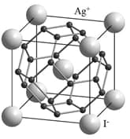

Superionics (En). Суперионные проводники (суперионики) (Ru).
Eng yuqori o'tkazuvchanlikka ega bo’lgan qattiq elektrolitlar (solishtirma o'tkazuvchanligi σ = 10-3-101 Om-1 sm-1, faollashtirish energiyasi Ea = 0,1-0,3 eV). Zich taxlangan strukturalar, qattiq kovalentli karkaslar yoki qatlamlar mavjudligi bilan xarakterlanib, ularda ionlarni (odatda, bir- va ikki zaryadli) transportini amalga oshiradigan yaqin joylashgan defekt pozitisyalarning cheksiz zanjirlar bo’ladi. Ko’pchilik superionli o'tkazgichlar uchun uch o'lchovli, kam holatlarda ikki o'lchovli o'tkazuvchanlik xarakterli bo’ladi. Rasman superionli o'tkazuvchanlikni kristall mobil ionlarining quyi panjaralarini "erishi" deb ta'rif berish mumkin. Eng ma'lum bo’lgan superionli o'tkazgichlarga natriyo’tkazuvchan β-Na2O·nAl2O3 («B-glinozyom yoki alyuminiy oksidi") va Na3Zr2PSi2O12 ( «NASICON»), 147-555oS da barqaror kumusho’takzuvchan RbAg4I5 va α-Agl (34-rasm), shungdek CaO, Y2O3 va boshqa qo'shimchalar bilan barqarorlashtirilgan ZrO2 ning kubik shakli (kislorodli o’tkazgich).

34-rasm. α-AgI strukturasi. Tartibsizlangan Ag+ ionlarning pozitsiyalarini bog’lovchi kesmalar, ularning kristalldagi transport yo'nalishini ko’rsatadi.